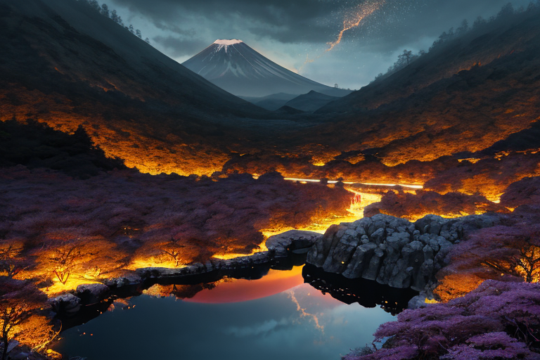
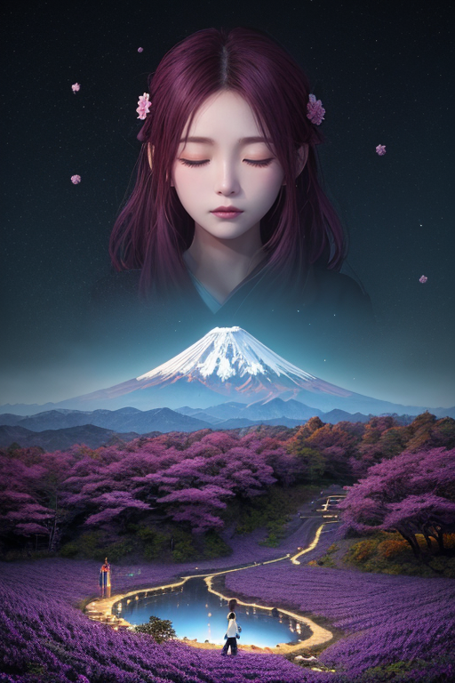
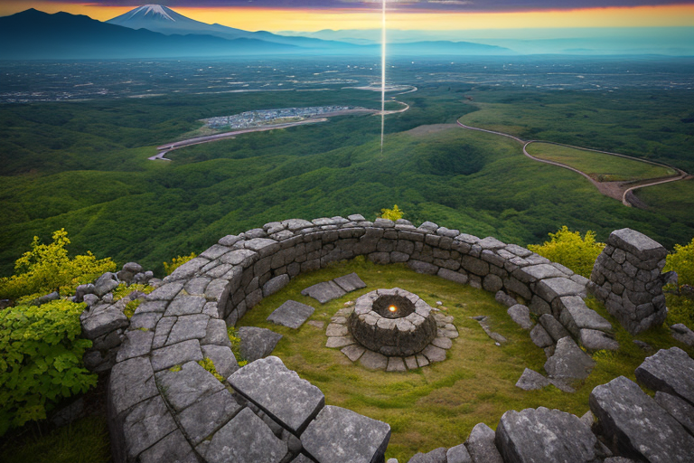
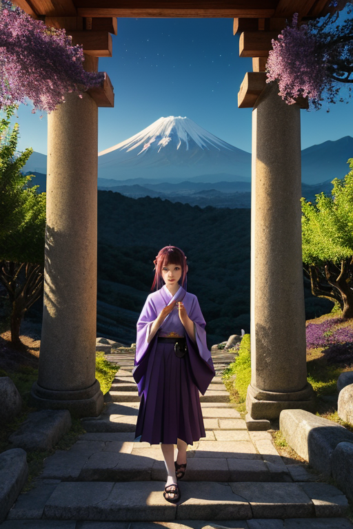
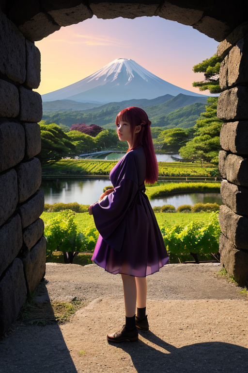

第一章 現実の山梨
あなたはまだ気づいていない。この土地にも、王がいることを。
富士五湖の水面は、今日も霊峰を完璧に映し出す。しかし、その静謐は薄氷のようだ。湖底には、かつての噴火の記憶が、黒い溶岩として沈殿している。昇仙峡の奇岩は、激しい地殻の圧力が作り出した彫刻であり、甲府盆地を囲む山々は、巨大な岩盤の歪みが生んだ自然の城壁である。ここは、美しさの根底に、常に地の軋みを抱えた土地だ。
ぶどう畑が広がる丘陵の下では、プレートが静かに潜り込み、エネルギーを蓄えている。富士山は優美な孤高の峰に見えるが、その内部ではマグマだまりが呼吸を続け、忍野八海の澄んだ湧水でさえ、深い地下からの圧力の現れに他ならない。この均衡は、絶え間ない微調整の上に成り立っている。
誰かが、目に見えぬ力を以て、その歪みを調整している。山梨の現実は、穏やかな果実の恵みと、封じられた霊峰の力が、危ういバランスで共存する日常そのものなのだ。

第二章 歪みの兆候
昇仙峡の紅葉は、例年より早く色づき始めた。それは美しい光景だったが、峰王ヤマナリア・ルミナには、地中を流れる微細な歪みの脈動が感じられた。甲府城跡から富士山を望む。かつて武田信玄が覇を競ったこの地は、今、目に見えぬ別の緊張に包まれている。
「圧力分布に乱れが生じています」
主席妖精ルミナラが、清里高原の風に揺れる草の穂先を伝いに報告を寄こした。彼女の声は明るいが、その内容は重い。富士五湖の水位にごく僅かな変動。忍野八海の一つで、湧水の温度が0.2度上昇した。これらは全て、霊峰の封印「霊峰封」にほころびが生じつつある兆候だった。
王は目を閉じ、地脈に耳を澄ます。高みを目指すことは、彼の存在理由だ。より完全な均衡を。より強固な封印を。しかし、この「高み」が、封じ込められた圧力をどこまでも増幅させはしないか？ その問いが、彼の理想主義の核心を、静かに揺さぶり始めていた。

第三章 王の葛藤
甲府城跡から見上げる富士は、今日も静謐だった。しかし王の内側では、葛藤が渦巻いていた。封印を完全なものに高めるべきか。それとも、ほころびを経て、新たな均衡へと移行させるべきか。高みを目指すとは、果たして完璧な封じ込めを意味するのか。
「峰王様、圧力は調整可能域内です」
ルミナラが、ぶどうの房のような光を揺らしながら報告する。妖精たちは現実の数値を淡々と伝える。だが王は知っていた。この静けさの下で、武田信玄が地の利を究めたこの盆地のように、エネルギーは蓄積され続けていると。
昇仙峡の渓流が岩を穿つように、問いは彼を穿った。高みとは、頂点への固定か。それとも、変化を受け入れながらも崩れない在り方か。彼の理想主義は、完璧な静寂を求めてきた。しかし、桃が熟すには時間と圧力が必要なように、この土地の安定も、ある程度の「揺れ」を内包するものなのかもしれない。
彼は目を閉じ、地脈の鼓動を聴いた。そこには、封じようとする意志と、解き放たれようとする衝動が、微妙な均衡を保って流れていた。

第四章 妖精との対話
甲府城の石垣に腰を下ろし、ルミナラが語り始めた。
「この山は、古くから『鎮め』られてきたんですよ、王様」
彼女の声は、忍野八海の湧水のように澄んでいた。
「富士の神霊は、時に荒ぶる。だから人々は、登拝でその怒りを鎮め、山麓に神社を建て、言葉を捧げてきた。信仰とは、畏れと祈りによる、巨大な力との交渉。あなたの『封印』も、その延長線上にある」
ヤマナリアは眉をひそめた。「ならば、なぜ今、その均衡が崩れつつある」
「それはね」ルミナラが一房のぶどうを手に取り、そっと握った。「完璧な封印は、熟成を止めてしまうから。ぶどうも、完全に外界から遮断されたら、決してワインにはならない。微かな空気、わずかな揺れが必要。この土地の『高み』は、静寂そのものじゃなくて……変化を受け止め、醸成する、器の高さなんです」
彼女の言葉は、彼の理想主義に、最初の亀裂を入れた。

第五章 微調整と余韻
富士五湖の水面は、かつてないほど静かだった。ヤマナリアは、自らの王国の核である霊峰の封印を、微かに緩めた。完全な静寂は死を意味する。ルミナラの言葉通り、必要なのは完璧な封じ込めではなく、巨大な力を内に抱えながらも、ほんのわずかな「揺れ」を許容する器の在り方だった。彼は、甲府城の石垣が積み上げられてきたように、圧力を一層、一層と調整し直していく。忍野八海の伏流水のように、目に見えないところで力を循環させる。
代償は、彼自身の「高み」への執着が色褪せていくことだった。理想の静謐は幻想だと知った。清里高原の風が運ぶのは、完璧な静けさではなく、土や草の、生きているざわめきだ。彼は、ぶどう畑の上に広がる空を見上げた。ここで醸されるワインのように、この土地も、封じられた力と、緩やかな変化の時間を必要としている。
彼はもう、無垢な高みを目指さない。揺れを受け止め、醸成する、その器たることを選んだ。霊峰は静かに眠り続ける。ほんの少し、呼吸をしているように。
あなたの町にも、王がいる。